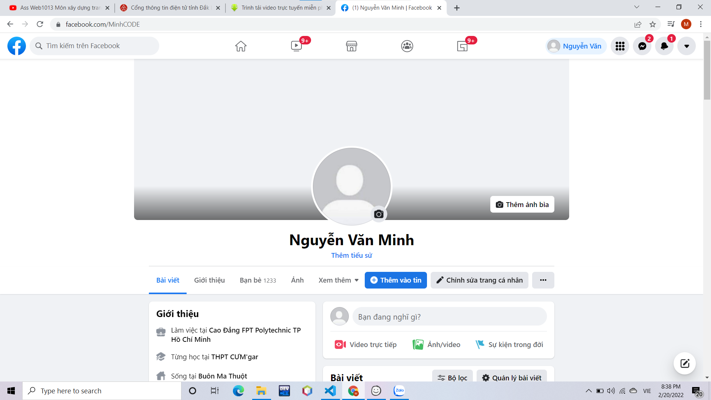
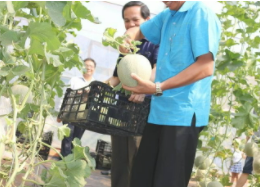

Tin liên quan
- Giới thiệu
- Thông tin chỉ đạo điều hành
- Văn bản pháp quy
- Quy hoạch - Kế hoạch
- Công khai ngân sách
- Chương trình, Dự án
Giới thiệu
Khai mạc Kỳ họp bất thường, Quốc hội khóa XV,Hiệu quả công tác thu hút đầu tư ở tỉnh Đắk Lắk, Nghĩa tình quân dân. Hiệu quả kép trong điều trị bệnh nhân Covid-19 tại nhà. Hội doanh nhân trẻ tỉnh Đắk Lắk xây dựng giải pháp kết nối giao thương. Nhiều giải pháp đảm bảo nguồn thu ngân sách trong năm 2022
Follow Me


Dự án Trồng rừng và sản xuất lâm nông kết hợp để các nhà đầu tư đăng ký thực hiện của Công ty TNHH Đại Đức Thành Tây Nguyên. (14/06/2021, 09:39) Thông tin dự án Trang trại trồng cây ăn quả công nghệ cao Krông Pắc. (25/06/2021, 09:48)
V/v đăng tải thông tin dự án đầu tư để xác định số lượng nhà đầu tư nộp hồ sơ đề nghị thực hiện dự án đầu tư tại một địa điểm. (25/06/2021, 15:29) Phê duyệt Đề án thành lập khu công nghiệp ứng dụng công nghệ cao huyện Cư M’Gar (22/06/2018, 08:21)
Cụm công nghiệp Trường Thành Ea H’leo: Diện tích 50,9ha. Hiện tại đã có 08 dự án đầu tư (04 dự án đang hoạt động, 02 dự án đang xây dựng, 02 dự án đăng ký đầu tư) với tổng diện tích đất thuê khoảng 11,752 ha, đạt tỷ lệ lấp đầy 33,6% tổng diện tích đất chia lô công nghiệp.
Đến thời điểm tháng 5/2012, cụm công nghiệp M’Đrắk - huyện M’Đrắk đã có 05 dự án đắng ký. Trong đó, có 01 dự án đang hoạt động: Dự án chế biến gỗ của Công ty Lâm nghiệp với diện tích 4 ha, vốn đầu tư 15 tỷ đồng. Dự án này hoạt động tốt. Trong đó, có 02 doanh nghiệp đang tiến hành xây dựng.
Thông tin cần biết
- Giới thiệu
- Thông tin chỉ đạo điều hành
- Văn bản pháp quy
- Quy hoạch - Kế hoạch
- Công khai ngân sách
- Chương trình, Dự án
Bảng đồ